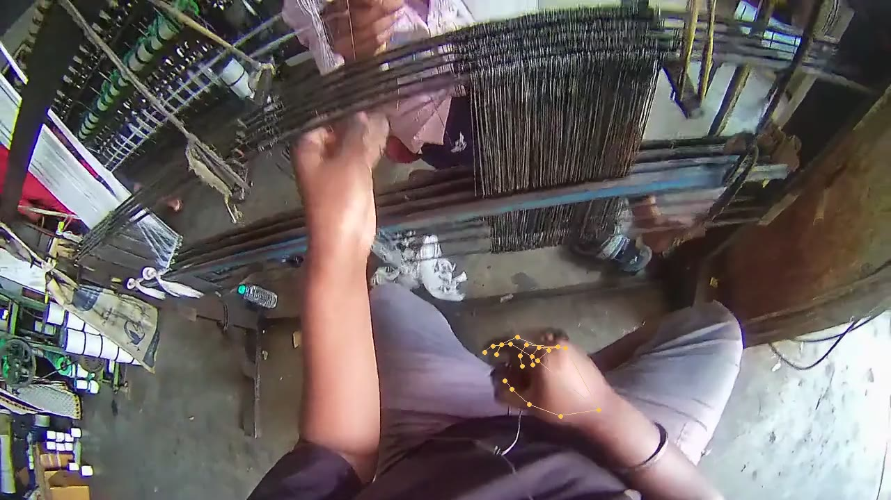
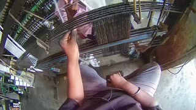
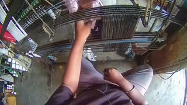
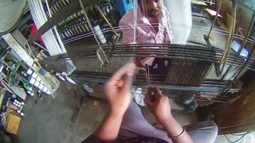
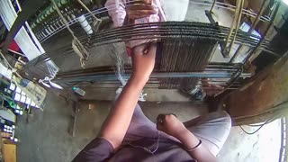
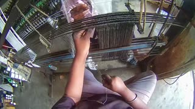

subtask · 2.200–4.800 s
event · pull · thread → loomhands · 21 keypoints · CPUtimed labels from a 7-second clip, one command.
hand frames tracked on CPU, no key, nothing uploaded.
episodes pass the official LeRobot loader after writeback.
accounts. Download one binary and start.
Every label sits on the episode’s own clock, in integer microseconds, so it lines up with frames, actions and state.





Read LeRobot v3.0/v3.1 episodes or any video. Track human hands locally.
annotate ./dataset --hands
Your vision model writes subtasks, events, contacts and state changes.
annotate ./dataset --semantic
Review it as video, then put subtasks into a new dataset copy for training.
--write-lerobot --out ./labeled
macOS Apple Silicon and Linux x86_64. Bring a Gemini key or any compatible endpoint. Apache-2.0.